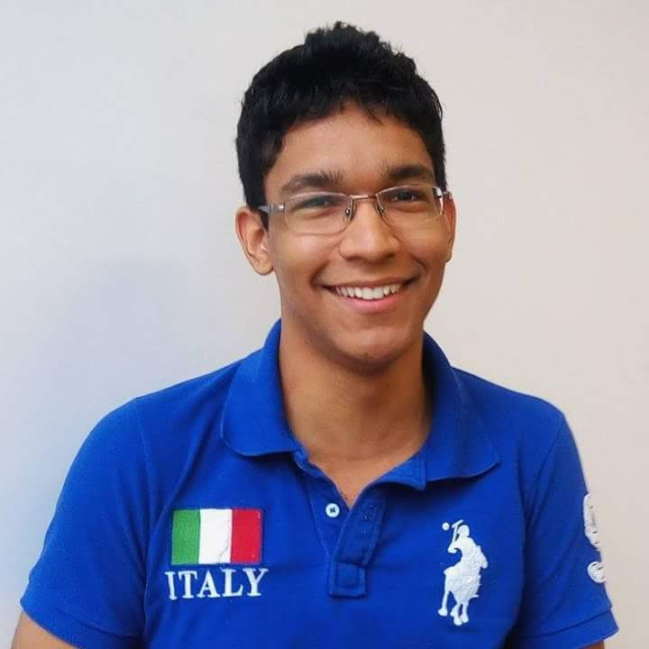

O Projeto
Do grego, Mathetai significa aprendiz. O nome vem como um pilar das razões de sua criação: unir aqueles que querem aprender com aqueles que querem ensinar em uma eterna relação de aprendizagem entre mestres e aprendizes em diversos assuntos, de Química à Programação. Em formato de rede social, os usuários são estimulados a ensinar seus conhecimentos e aprender tantos outros com os demais usuários, formando uma comunidade colaborativa e diversa culturalmente, totalmente gratuita e que presa pela difusão de conhecimento de forma simplificada e acessível a todos.

Allen Vieira
Apaixonado por tecnologia, conheceu programação ainda pequeno, e percebeu que poderia aliar os conhecimentos técnicos para melhorar a vida de outras pessoas. Sentia-se mais confortável com o Back-end, mas atuou como desenvolvedor Full Stack durante o projeto Mathetai, o que proporcionou uma grande evolução no desenvolvimnento do Front-end.
Breno Noccioli
Cientista social por formação em busca de maneiras de impactar a
vida das pessoas de forma significativa. Descobriu na programação um novo
fascínio pelo diálogo multidisciplinar, a possibilidade de mudar o mundo
e melhorar a vida das pessoas. No projeto Mathetai, atuou como desenvolvedor Full Stack, colaborando na construção do Back-end com Java e Spring Boot, na criação e estilização de componentes com HTML, CSS, Bootstrap e Angular e insights de UX.
Fernanda Ferraz
Desenvolvedora Full Stack Jr, com foco em Front-end e estudante de
Desenvolvimento de Sistemas na ETEC Jardim Ângela. No projeto Mathetai,
auxiliou na criação da API, criação de componentes, estilização e
organização em Kanban utilizando o Trello. Acredita que com uma educação
acessiva todos poderão conquistar seus sonhos e objetivos de vida.
Lais Lima
Sempre foi muito curiosa e teve muito interesse em ciência, educação e
tecnologia. Vê na programação a possibilidade de atuar de forma
interdisciplinar, em conjunto com seus outros interesses, desenvolvendo
projetos que impactem positivamente o mundo. Na execução do Mathetai
ajudou principalmente no desenvolvimento do wireframe do projeto, banco
de dados e na estilização dos componentes.
Verônica Almenara
Advogada apaixonada por tecnologia e performar em grandes projetos.
Atuou como Desenvolvedora Full Stack na execução do projeto, codando em
Java com Spring Boot e Angular, além de organização em Kanban e da
Sprint na execução da estória.